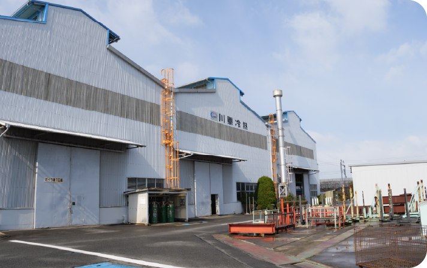
駅、病院、商業施設、工場。
そんな大きな建物や産業の現場で、
「空調」と「熱」を支える機械をつくっている会社です。
川重冷熱工業が手がけるのは、
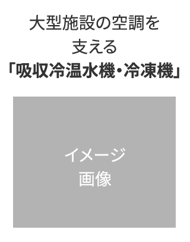
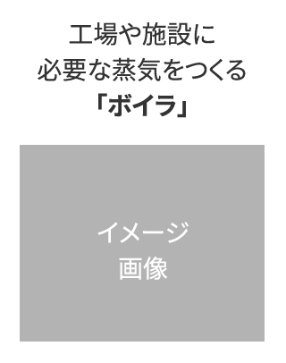
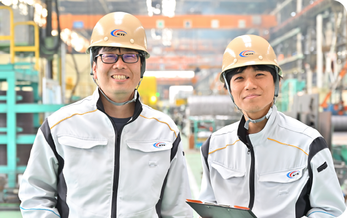
川崎重工グループの一員として、
設計・開発から、製造、販売、
納入後のアフターサービスまでを
一貫して手がけています。
だから技術者の仕事も、
机の前で設計するだけではありません。
営業や製造部門と話しながら、
自分のアイデアを図面にし、
実際に工場で製品になっていくところまで関わる。
そして、その製品が
お客様のもとで動き続けるところまで見届ける。
「自分がつくった」と実感できる仕事が、
ここにはあります。
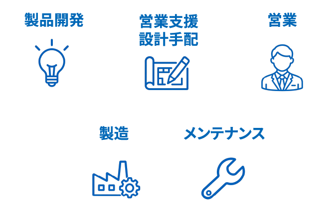
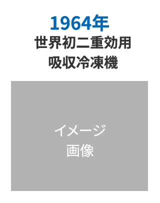
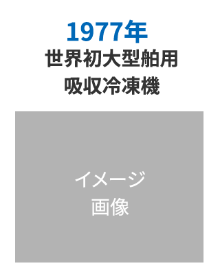
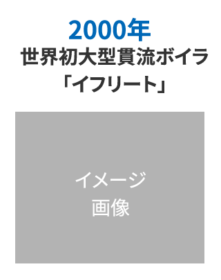
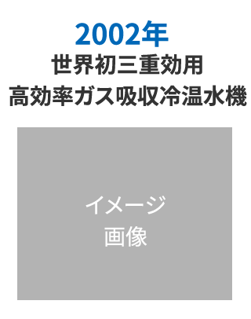
水素を活用したボイラや吸収冷温水機の
開発をはじめ、
脱炭素に向けたさまざまな技術開発に
取り組んでいます。
川重冷熱工業の働く環境や事業の規模を、
数字でわかりやすくご紹介します。
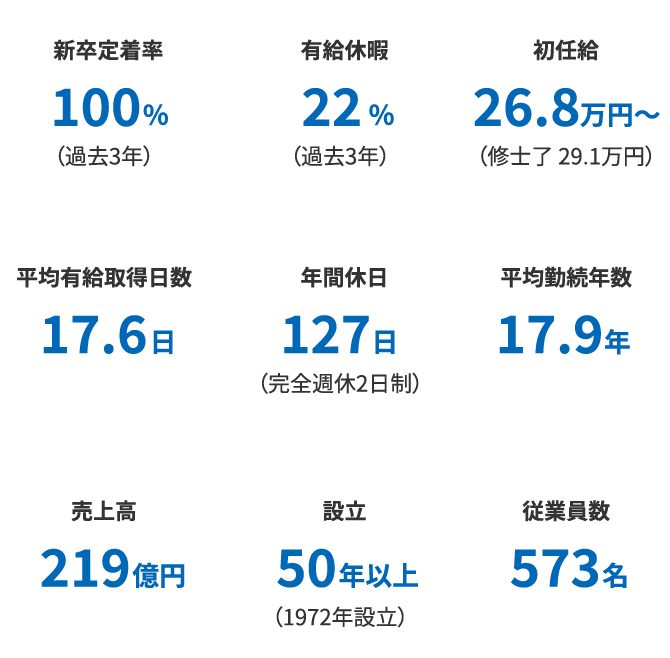
新しいことに挑戦するためには、
安心して働ける環境も大切です。
川重冷熱工業では、一人ひとりが長く働き、
挑戦を続けられる環境を整えています。
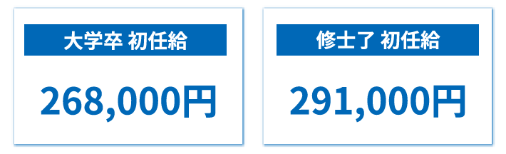
県内民間企業の大学卒・新卒技術者の
平均初任給は240,512円。
滋賀県が公表している2025年の
民間給与実態調査では、
川重冷熱工業の大学卒初任給268,000円は、
この平均を27,488円、約11%上回る水準です。
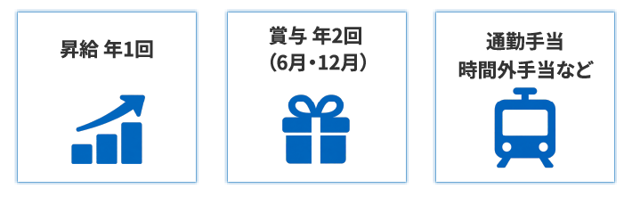
長く働きながらキャリアを築いていくための
給与・待遇制度も用意しています。
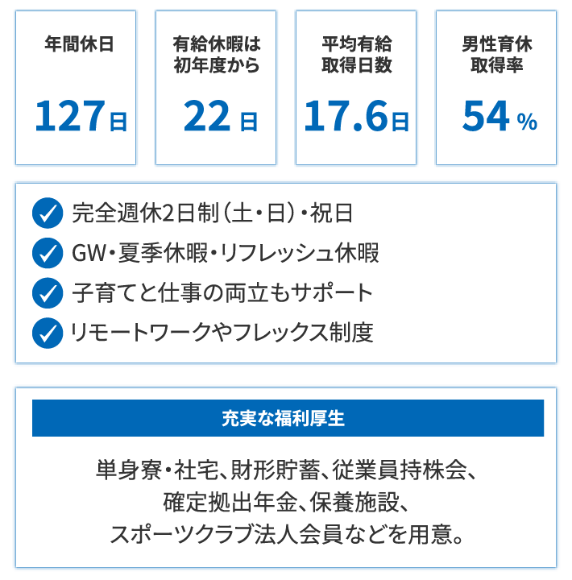
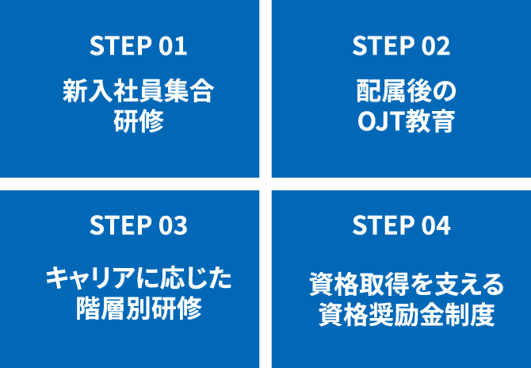
段階的に成長できる教育体制を整えています。
教育研修所には、ボイラ・吸収冷温水機の
実機・構造模型・ARシミュレーターなどを完備。
2024年度からは、他部門の仕事を体験できる
独自のローテーション制度もスタート。
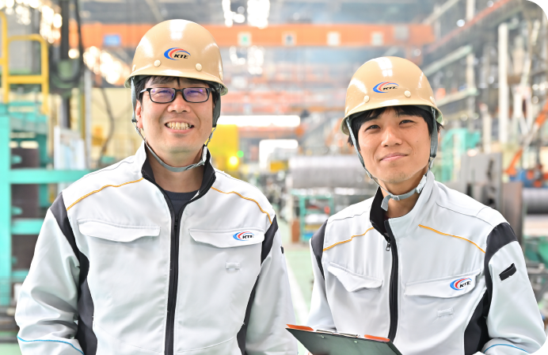
川重冷熱工業では、本人がやりたい仕事を、実際のキャリアにつなげている社員の事例があります。
大学で機械工学を学んでいたF.Tさんは、採用面接の際に「開発に携わりたい」という希望を伝えていました。
入社後すぐに開発を担当したわけではなく、まずは約1年半、吸収式冷温水機の品質改善や試運転業務を担当。
そこで製品や現場への理解を深めた後、本人が希望していた空調機の新製品開発に携わることになりました。
現在は、試験内容の計画立案や実施、試験データの整理、部品選定など、新製品の研究開発に関わる業務を担当しています。
F.Tさん自身も、面接で伝えた「開発に携わりたい」という希望を会社が覚えていたこと、
そしてそれが想像していたより早く実現したことを嬉しかったと振り返っています。
最初の仕事で経験を積みながら、その先で自分が挑戦したかった仕事へ。
入社前に思い描いていたキャリアが、実際の仕事につながった事例のひとつです。
※社員個人の事例であり、希望する職種・部署への配属を保証するものではありません。
川重冷熱工業で働く先輩に、仕事のやりがいと
これからの「やりたい！」を聞きました。
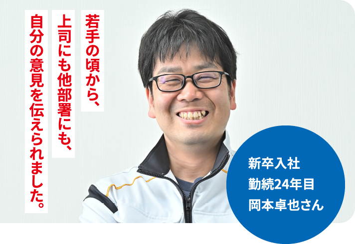
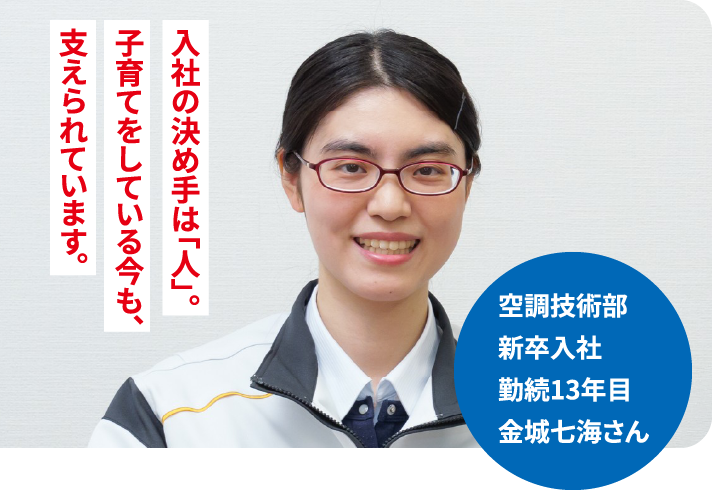
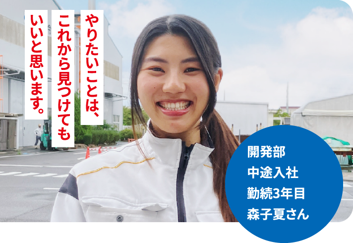
吸収冷温水機（大型空調機）および汎用ボイラの設計開発・製造・販売・アフターサービス
【空調事業（吸収冷温水機）】 ◇吸収冷温水機・冷凍機のパイオニアとして1959年に国内で初めて吸収冷凍機を製造以来、1964年には世界で初めてとなる二重効用型吸収冷凍機を製造するなど、常に先進的な商品を開発・製造・販売してきました。 ◇2013年には世界最高効率の二重効用吸収冷温水機「Efficio」を販売開始。同製品は日刊工業新聞社 2013年十大新製品賞 本賞を受賞！
【ボイラ事業（汎用ボイラ）】
◇1899年の初号機製造以来、長年の燃焼技術を活かした水管ボイラ、業界に先駆けて商品化した大型貫流ボイラ、ガスタービンやガスエンジン用の排熱ボイラ等、顧客ニーズに合わせた多種多様な産業用ボイラを製造しています。
◇大型貫流ボイラ「Ifrit」や、小型貫流ボイラ「WILLHEAT」は業界最高のボイラ効率に加え、業界最長となる15年間の製品保証を実現するなど、高性能・高品質を武器に、業界をリードしています。
★水素エネルギーで低炭素・脱炭素社会の実現へ
次世代エネルギーとして期待が高まりつつある水素の普及・拡大に積極的に取り組み、2018年には川崎重工業と共同でNOx排出値が世界最小レベルのドライ式低NOx水素専焼バーナを開発。2021年5月にそのバーナを搭載した「水素専焼小型貫流ボイラ」の発売を開始しました。2023年12月には、脱炭素を志向するユーザーの導入機運の高まりを受けて、燃焼方法（水素専焼・水素／LNG混焼・LNG専焼）を切り替えられるバーナを搭載した「水素混焼大型貫流ボイラ」を発売するなど、水素適用製品をさらに拡大し、多様な市場ニーズに的確に応えながら、環境負荷の低減、低炭素・脱炭素社会の実現へ貢献していきます。
★海外展開
東南アジアをはじめとするアジア市場への進出を図ります。現在は、ベトナム・タイに販売サービスの拠点を設け、東南アジア市場において地域密着での販売展開をしています。
★省エネ・省コスト・CO2排出量削減！
ガスタービン・ガスエンジンなどから発生する排熱を利用するガスコージェネレーションシステムへの組み込み、また、冷凍機においては廃温水や太陽熱、ボイラにおいては工場で発生する副生物（水素ガス等）の利用など、様々な熱源が利用可能。
〒533-0033
大阪市東淀川区東中島1丁目19番4号（ルーシッドスクエア新大阪8階）
077-563-1111
1896（明治29）年
1972（昭和47）年3月10日
14億6,050万円
573名（2026年3月末現在）
【男性：505名、女性：68名】
223億円
川崎重工業(株)
川崎重工グループ各社
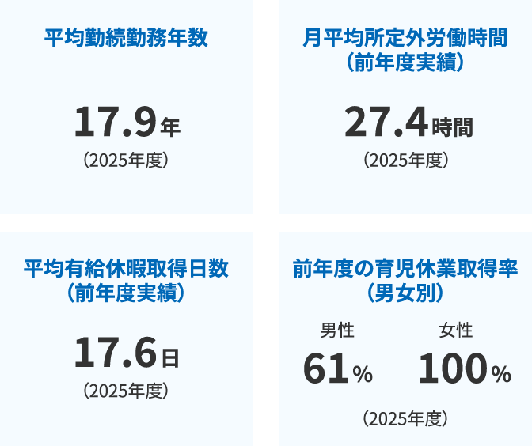
制度あり
・新入社員研修（1カ月）
社内制度の周知、製品知識、各部署の役割、社長講話、ビジネスマナー研修、等
・OJT教育研修
・新任幹部研修
・階層別研修
・営業研修
・サービス研修 など
★その他、随時実施される社内研修や川崎重工が主催する各種研修に参加が可能です。
（プレゼンテーション研修、ファシリテーション研修、問題解決スキル研修 等々）
制度あり
資格奨励金制度
★全従業員が対象。会社が指定している公的資格についてランクと奨励金を設定。
（例）技術士、エネルギー管理士、衛生管理者、TOEIC など
制度あり
あり（OJT制度）
★1名の新入社員に対して1名、先輩社員が指導員となり指導します。
制度なし
なし
制度なし
なし
技術系総合職
理系学部学科(機械、電気、電子、化学、ほか理系全般)
事務系総合職
学部学科不問
268,000円(四大卒)
291,000円(修士了)
※2026年4月実績
通勤手当・時間外手当など
滋賀、大阪、東京、名古屋をはじめ、
全国の当社事業所
8:30〜17:30
年1回 (4月)
年2回 (6月、12月)
完全週休2日制(土・日)、祝日、創立記念日、
ゴールデンウィーク、夏季休暇など
その他、年次有給休暇(初年度から22日)、リフレッシュ休暇など
産前産後休暇、育児休業、産後パパ育休
保険：雇用、労災、健康、厚生年金
制度：財形貯蓄(住宅・年金)、従業員持株会、確定拠出年金など
施設：社有単身寮、借上単身寮・社宅、保養施設、スポーツクラブ法人会員など
休日休暇：産前産後休暇、育児休業、産後パパ育休など
新人社員研修(集合研修、OJT教育研修)
階層別研修
資格奨励金制度 など